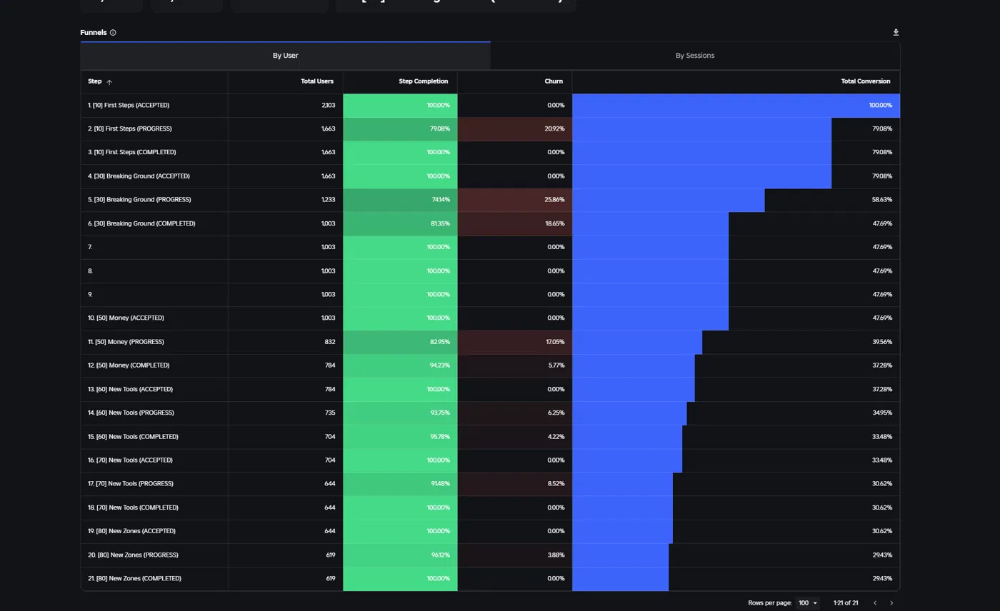
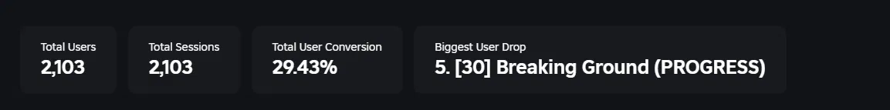
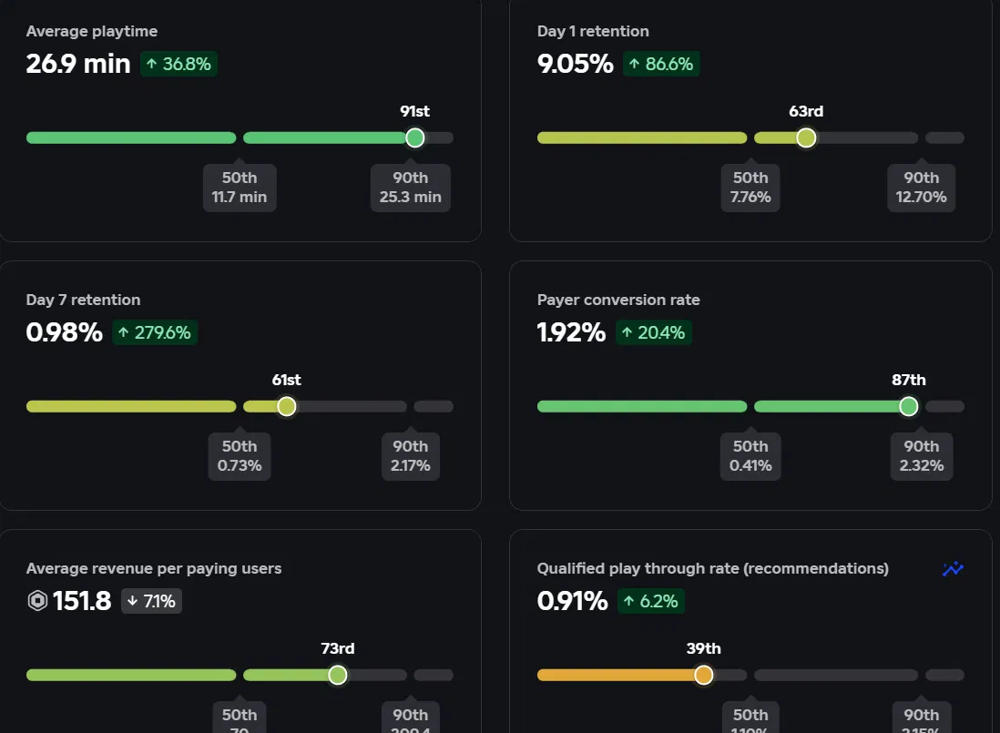
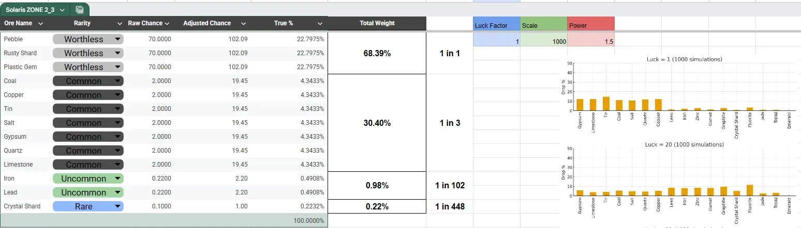

Published · Roblox · 2025 to 2026
Lootin'
Level Design
Quest Design
Player Analytics
Lighting Design
Economy Design
Roblox Studio
A published Roblox action-mining game that reached 431K visits, sustained 200 to 300 daily active players at peak, and earned an 86% positive review rating. I owned the full design pipeline across level layout, tutorialisation, economy balancing, and live data analysis. The game was later sold to another studio on the strength of its metrics and community.
431KTotal visits
86%Positive reviews
3,000+Favourites
200–300Daily active players (peak)
91stPercentile avg. playtime
87thPercentile payer conversion
Overview
Lootin' was a live-service action-mining game on Roblox built around a core loop of exploring zones, mining resources, upgrading equipment, and unlocking new areas. Across approximately 10 zones with 3 to 4 hours of content and a deep quest system, my role covered every design layer: the world players moved through, the systems that kept them engaged, the data that showed where the design was failing, and the changes that fixed it.
Lootin' built a loyal community, consistent retention, and a positive review rating that held throughout its run. When I returned to full-time study, the title was sold to another studio that wanted to continue it. Selling a game you built from scratch is a good outcome. I retain the development environment and all historical data including economy spreadsheets, funnel analysis, and playtesting records.
Gameplay
The game spans multiple distinct zones, each with a visual identity and difficulty gradient giving players a readable sense of progression. Navigation, lighting, and path geometry directed players without explicit UI markers.
Solaris (Tutorial Zone)
Solaris, the game's tutorial zone, showing the Aurora Maker, Sell shop, and miner statue. Zones like this function as proper towns with a full NPC roster; smaller sub-zones branching off them are points of interest built around mineable areas and quests, rather than a single central hub players repeatedly return to.
Annotated Player Flow
Annotated level screenshot showing designed navigational cues: a colour-differentiated pathway, a tree-line directing the player linearly, and an area opening that signals a zone transition. Navigation was built into the environment rather than UI overlays.
Reward Feedback Design
A loot drop moment showing the "Perfect!" timing feedback. Reward clarity at key moments was a deliberate design priority. The skill-based timing layer added engagement to the core mining loop.
Compendium System
The Journal Compendium tracking discovered ores across all zones. Designed to give players a collectible meta-goal that drove exploration across the full zone range and increased session length.
Quest Design
The Quest tab showing a zone-specific objective. Quests were designed to funnel players toward new areas naturally, using NPC directives rather than map markers to maintain the exploration feeling.
Equipment Progression
The Miners Satchel showing pickaxe progression. Each tool has four balanced stats: Efficiency, Control, Luck, and Rating. The stat system was modelled in the economy spreadsheet to ensure each upgrade felt meaningful without trivialising earlier content.
Wintermist Keep
Wintermist Keep, the last zone built before the project was handed over. A clear difficulty and visual step up from the starting zones, reinforcing progression through environment rather than only through UI numbers.
Mining Cave
A core loop zone, resource nodes surrounding a central landmark to keep navigation legible even as players explored off the critical path.
Cinematic Still
A posed shot of the miner statue against the mountain backdrop, composed to look good cinematically rather than a capture of actual gameplay.
Level Design
I designed the complete world layout starting from blockout, establishing spatial flow, zone progression, and points of interest before any art was placed. With approximately 10 zones built across the game's lifespan, each area needed a distinct identity and a clear navigational logic that felt natural rather than prescribed.
- Designed zone layout to create a readable progression arc: each area had a distinct visual identity and difficulty gradient so players always knew where they were and what came next
- Built navigational cues into the environment itself using lighting, scale, path geometry, and colour differentiation to guide players without explicit UI markers
- Designed the tutorialisation zone to introduce core mechanics through action rather than text, keeping players inside the game loop from the first seconds of a session
- Created lighting design passes across all zones to support atmosphere, reinforce zone identity, and direct player attention toward interactable elements
Onboarding & Funnel Analysis
Tracking the onboarding funnel revealed where the tutorial design was losing players before they reached the game's first meaningful reward. The data identified "Breaking Ground" at step 5 as the biggest drop point, with 25.86% churn at that stage and a total user conversion of 29.43% across the full funnel.
- Built a 21-step player behaviour funnel tracking acceptance, progress, and completion at each tutorial stage across 2,103 users
- Identified the largest drop point as step 5 of the "Breaking Ground" quest, where 25.86% of players stopped engaging
- Redesigned the quest pacing and zone boundary at that stage based on the data, adjusting the tutorial flow to reduce friction at the identified bottleneck
- Tracked post-change funnel performance to confirm improvement before moving on

Tutorialisation Funnel (21 steps, 2,103 users)
Full funnel showing step completion, churn rate, and total conversion at each stage across the tutorial sequence. The largest drops are visible at steps 2 and 5, both of which were iterated on following this data.

Conversion Summary
2,103 users tracked. Total conversion 29.43%. Biggest identified drop at step 5, Breaking Ground (PROGRESS).

Benchmarked Performance
Lootin' at the 91st percentile for average playtime and 87th percentile for payer conversion rate within the simulation genre benchmark. Day 1 retention at the 63rd percentile.
Economy & Systems Design
The game's economy required ongoing balancing as the player base grew and behaviour shifted. Loot tables, luck modifiers, upgrade costs, and progression pacing were all modelled in Excel before changes were pushed to the live game.
- Built spreadsheets modelling loot tables per zone with rarity tiers, raw chance values, adjusted chance after luck modifiers, true percentages, and total weight
- Ran 1,000-simulation luck curve models at different luck values to visualise how the drop distribution shifted, ensuring higher luck felt meaningfully different without making rare items trivial
- Tracked economy metrics post-patch to catch unintended consequences: inflation, trivialised content, or progression bottlenecks
- Balanced four pickaxe stats (Efficiency, Control, Luck, Rating) across the equipment tier progression to ensure each upgrade felt earned

Economy Balancing Spreadsheet (Solaris Zone 2-3)
Loot table model for the Solaris zone showing ore rarity, raw and adjusted drop chances, true percentages, luck factor variables, and simulation graphs comparing drop distributions at Luck=1 vs Luck=20. Changes were modelled here before going live.
Playtesting & Community
- Ran structured playtesting groups to gather quantitative data on specific design changes before pushing to the live game
- Managed a Discord community of 400+ members, using community feedback as a qualitative signal alongside the quantitative funnel data
- Designed VFX passes for key reward moments including loot drops, level-ups, and zone unlocks to reinforce feedback clarity at the moments that most affect player satisfaction
- Used Roblox analytics benchmarks to compare Lootin' performance against comparable games in the simulation genre, identifying areas where design changes moved the needle on retention and playtime